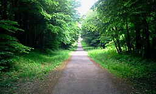
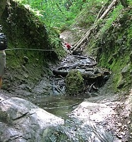
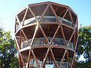

Dobogókő
Dobogókő a Pilis egyik legismertebb és legkedveltebb kirándulóhelye, amely Budapesttől mindössze egy órányi autóútra található. A hegytetőről lenyűgöző kilátás nyílik a Dunakanyarra, tiszta időben akár a Börzsöny vonulatai is jól kivehetők.
A terület számos turistaút találkozási pontja, ezért kezdő és tapasztalt túrázók számára egyaránt ideális célpont. Télen kedvelt szánkózóhely, nyáron pedig hűvösebb klímája miatt vonzza a kirándulókat. Dobogókő spirituális jelentőséggel is bír, sokan a „Föld szívcsakrájaként” emlegetik.
Rám-szakadék
A Rám-szakadék Magyarország egyik legizgalmasabb és legkalandosabb szurdokvölgye, amely a Visegrádi-hegységben található. A szurdok meredek sziklafalai között egy patak kanyarog, amely esősebb időszakban különösen látványos.
A túra során létrák, láncok és kapaszkodók segítik az előrehaladást, ezért a szurdok bejárása fokozott figyelmet és megfelelő túracipőt igényel. A Rám-szakadék tavasszal és nyáron a legnépszerűbb, de csapadékos időben balesetveszélyes lehet.
Prédikálószék
A Prédikálószék a Pilis egyik legmagasabb pontja, amely 639 méteres magasságával kiemelkedő panorámát kínál a Dunakanyarra. A kilátó modern kialakítású, biztonságos és minden irányban körpanorámát biztosít.
A Prédikálószékre vezető túra meredekebb szakaszokat is tartalmaz, ezért közepes nehézségű útvonalnak számít. A csúcsról lenézve a Duna kanyarulata különösen naplementekor nyújt felejthetetlen látványt, ezért a hely a természetfotósok körében is rendkívül népszerű.